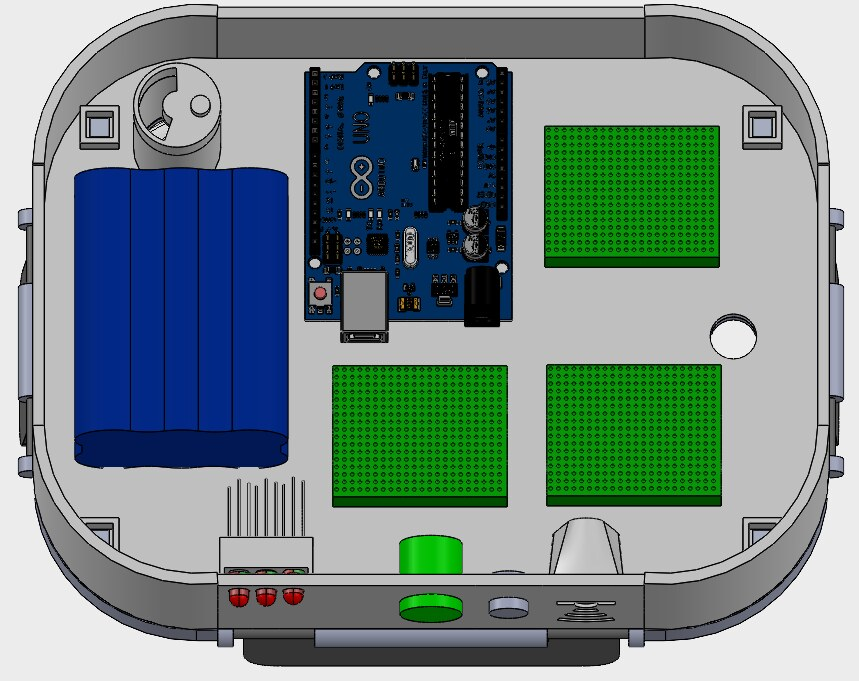
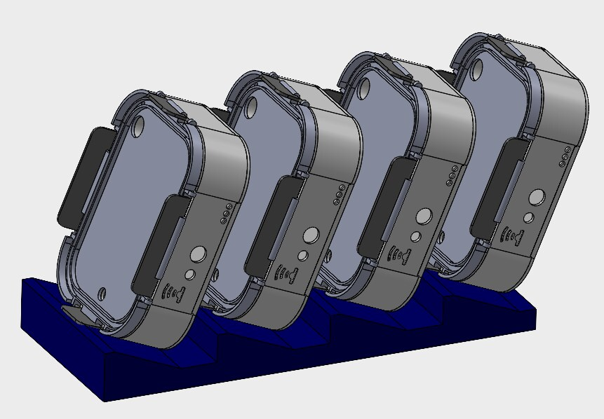
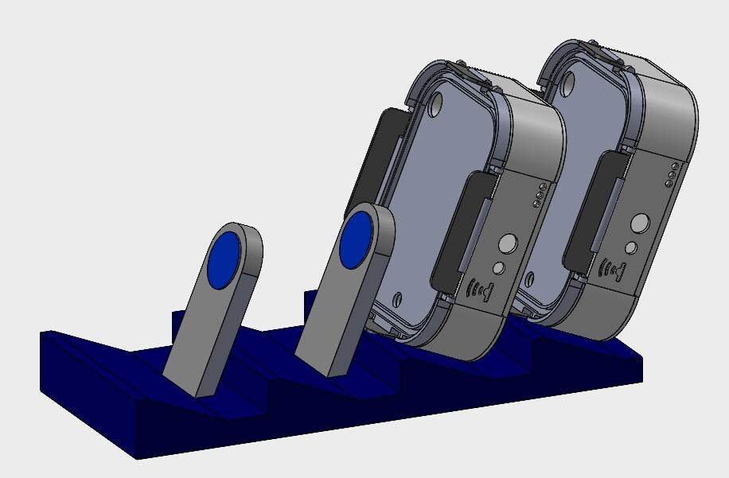
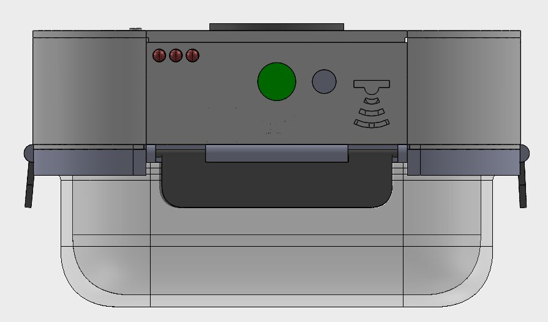
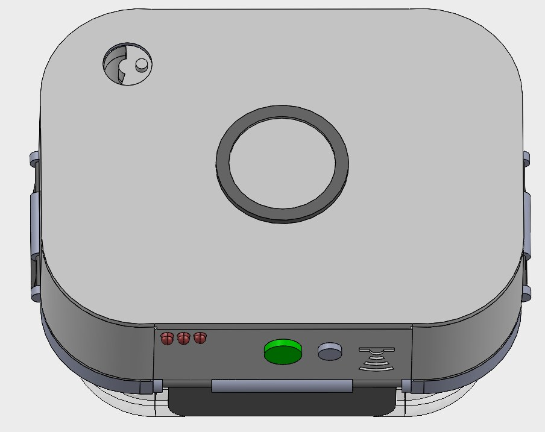
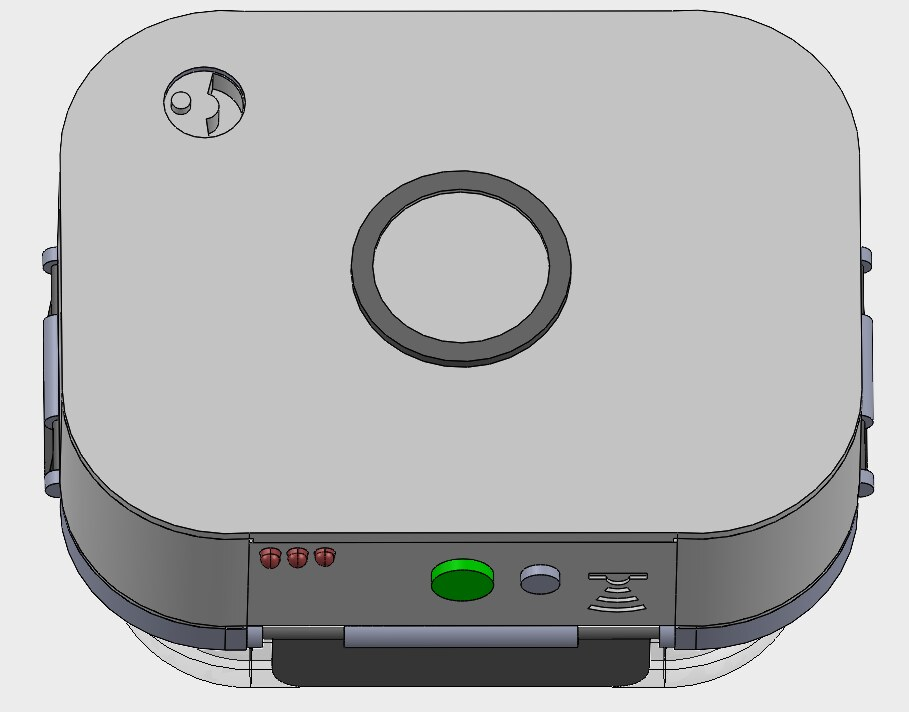
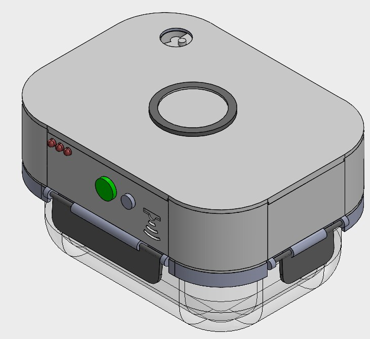
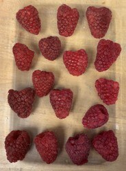
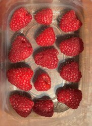
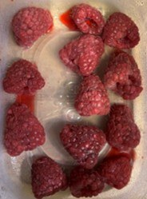

UV Food Storage
A UV-C storage lid that slows produce spoilage, with a two-button interface anyone can use without a manual, and an inductive charging system built for a real kitchen counter.

The technology was proven. The product was not.
Roughly a third of global food waste comes from produce spoiling before anyone eats it. In our own survey of 68 people, most said they throw out fruits and vegetables within a week of buying them. UV-C light is a known way to slow that spoilage, and this is where the project gets interesting: we did not start from a blank page.
A 2024 team before us had already proven the core technology, extending produce shelf life by up to 20 days with UV-C. But their prototype had a real flaw. Overexposure gave fruit the equivalent of a sunburn, and the device was awkward to actually live with. A patented competitor, EcoLoc, existed too: a single three-minute dose mode, USB-C charging, about a 14-day extension, and no humidity control.
So our job was not to invent UV-C food storage. It was to turn a working science experiment into something a person would want on their counter, and to differentiate it from a patent we could not touch. That reframed the whole capstone as a product design problem, which is exactly the kind of problem I care about.
Charging designed for a kitchen, not a spec sheet.
The competitor charged over USB-C. On paper that is fine: clear indication, a tactile plug, everyone owns the cable. But picture a kitchen that actually uses these. USB-C means one cable per lid, a tangle of cords on the counter, and only around 20 cycles per charge. For a product meant to sit in a cabinet and get grabbed daily, that is the wrong model.
The inductive charging system was my idea. I proposed replacing per-lid cables with a single dock, and owned that decision through the design.
The answer was an inductive charging dock that powers up to four lids at once. Each lid drops onto the dock and self-aligns with magnets, so there is no plug to find and no wrong way to set it down. Charge state lives on the lid itself, not on a separate hub, so you can read it at a glance while it sits in the dock.
The harder half of this was packaging. Everything that makes the lid smart has to live inside a sealed, dishwasher-safe shell: an Arduino Nano, a 12V battery, four safety switches, the UV-C LEDs, and the perforated boards tying it together. Fitting that into a lid that still latches, seals, and survives a dishwasher was the real integration challenge, and it is the part of the project closest to the electromechanical packaging work I want to keep doing.



Runtime came from the battery choice and the three intensity modes. Lower intensity buys far more cycles between charges, which matters for a countertop device that should rarely need docking.
| Mode | Runtime | Three-minute cycles |
|---|---|---|
| Low | 10.8 hr | 216 |
| Medium | 6.4 hr | 128 |
| High | 4.5 hr | 90 |
| EcoLoc (reference) | — | ~20 |
Because the device lives in a refrigerator, I validated the battery where it actually runs. With Ryan Eicher, I tested efficiency in a 35°F environment, using a multimeter to measure the ratio of useful to total output and confirm the runtime numbers held up at fridge temperature rather than only at room temperature.
A charging decision is a product decision. Inductive charging cost us complexity inside the lid and bought back the thing that actually matters: a device you never have to fight with on the counter.
An interface you do not need a manual for.
People do not read manuals for kitchen gadgets. If the device cannot explain itself, it fails. So the whole interface had to communicate through as little as possible: two buttons and a language of light.
A mode button cycles low, medium, and high, and the indicator LEDs blink once, twice, or three times to confirm. A start button blinks at the beginning of a cycle, flashes while it runs, and turns green when it finishes. A three-segment battery indicator shows charge in thirds, pulses red while charging, and holds solid green when full. A separate humidity dial gives open and closed guidance depending on what you are storing. Nothing on the device needs a word of text.

To check that this actually worked, we ran a usability protocol with 10 first-time users. We timed how long it took each person to complete a full cycle with no instructions at all, logged every error without correcting it, then had them try again after reading the manual. The targets were a first successful cycle in under two minutes cold, and satisfaction of at least 7 out of 10 across every question we asked, including how confident people felt about safety.
The interface was the most collaborative part of this project. We came from different engineering backgrounds, and getting the design this simple took a lot of back-and-forth. My biggest lesson was how much of the final product is decided by how clearly a mixed team communicates, not just by any one person's idea.


Communicating every state with two switches, a handful of LEDs, and one dial is a usability decision and a cost decision at the same time. Fewer parts, and a product that still explains itself.
Making accidental UV exposure impossible.
UV-C is effective because it is harmful to living cells, which is the entire point and also the entire risk. A risk analysis of user and component failures pointed at one worst case: a single switch that could let the light run while the lid was open.
The resolution was redundancy. Four compression switches must all engage before a cycle can start, so no single failure exposes a user, and switch-wear data (about 30% wear at 50,000 presses) supported designing for that margin. A code-level auto shut-off kills the cycle the moment the control loop is interrupted, and the physics helps too: UV-C does not pass through the glass container or the PLA lid, so exposure is contained by the materials themselves. The design was checked against the relevant standards for UV-C safety, batteries, and household appliances (ISO 15858, IEC 62471, IEC 62133, IEC 60335-1), with IP67 as the waterproofing target.
This subsystem was led by teammates. I helped wire it up, but the safety architecture is their design work. I am including it because it is central to how the product functions, not because it was mine to claim.
How ours is different from what existed.
Two decisions did most of the differentiating. Variable intensity, with three modes tuned to how delicate a food is, directly solves the previous team's sunburning problem, where a single dose treated everything the same. And a full electronics module sealed into the lid means the whole thing is dishwasher-safe and stackable, with no separate hub, where the competitor needs one.
| Feature | Previous prototype | EcoLoc | Ours |
|---|---|---|---|
| Inductive charging | ✗ | ✗ | ✓ |
| Runs only when lid is latched | ✗ | ✓ | ✓ |
| Variable intensity modes | ✗ | ✗ | ✓ |
| Stackable | ✗ | ✗ | ✓ |
| Dishwasher-safe | ✗ | ✗ | ✓ |

Seven days, treated against control.
The final test was simple and hard to argue with. We split one batch of raspberries into a treated group and an untreated control, stored them the same way, and photographed both every 24 hours for a week.
By day seven the difference was obvious. The treated berries showed minor color change, with no odor and no mold. The control had visible mold colonies, a fermentation smell, and liquid pooling in the tray. We also ran three repeatability trials on each component (the switches, the mode LEDs, the start LED, and the battery indication) to confirm the electronics behaved the same way every time.




Same batch, same storage, photographed across seven days. Read each row left to right to follow the change over time. Top row treated with UV-C, bottom row left untreated. By day 7 the treated berries stayed firm with no mold or odor, while the control broke down with visible mold and seepage.
What I would carry into the next one.
The clearest lesson was about people. Working with engineers from very different backgrounds taught me how much depends on conveying an idea clearly, and how a good design usually comes out of constructive disagreement rather than one person being right. I also worked directly with purchasing for the first time, and learned how to navigate those cross-functional relationships to actually get parts in hand.
Technically, this was a big step in electronics for me. I came in with very little hardware experience, and this was the first time I ever soldered. Getting an embedded system to behave reliably, then packaging it into a sealed lid, is a large part of why I want to keep doing electromechanical product work.
It also honestly reinforced how much I care about the small details and about designing around the user rather than the spec. On the budget side, we came in at $316.90 against a $222.90 proposal, with the circuit alone running from an estimated $68 to $162. The overrun was a lesson in how easily an electronics bill of materials creeps once you start adding redundancy and boards.
If I picked this up again, the next moves are clear: real IP67 or IP68 waterproofing with membrane switches and sealed UV-C bulbs, dosing tuned per food type, and cycles-per-day optimization so the device runs only as often as it needs to.